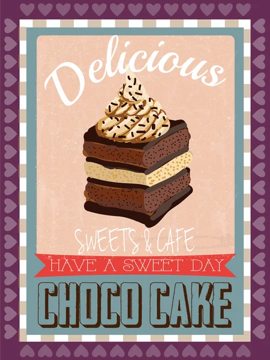

Best Foods Chocolate Mayonnaise Cake
Vintage advertisement recipe for Best Foods Mayonnaise & Hellman's Mayonnaise Chocolate-Mayonnaise Cake, a vintage old fashioned Mayonnaise Cake. A rich, moist cake without adding eggs or shortening; creamy, whole-egg Mayonnaise takes the place of both.
Ingredients
- 3 cups unsifted flour
- 1 1/2 cups sugar
- 1/3 cup cocoa
- 2 1/4 tsp baking powder
- 1 1/2 tsp baking soda
- 1 1/2 cups BEST FOODS Real Mayonnaise
- 1 1/2 cups water
- 1 1/2 tsp vanilla
Method
- Grease 2 (9 x 1 1/2 inch) layer pans; line bottoms with waxed paper.
- Sift together dry ingredients into a large bowl.
- Stir in Real Mayonnaise.
- Gradually stir in water and vanilla until smooth and blended.
- Pour into prepared pans
- Bake in 350-degree (moderate) oven for about 30 minutes or until cake tests done.
- Cool. Remove from pans. Makes 2 layers.
Return to the top
Return to main page